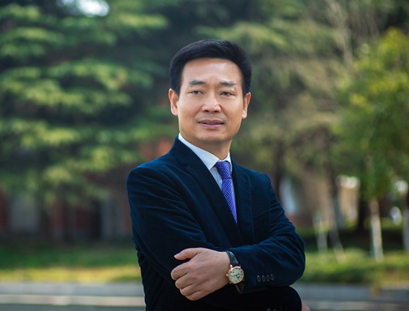
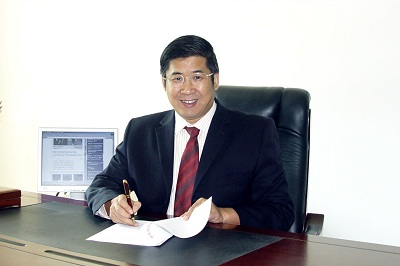
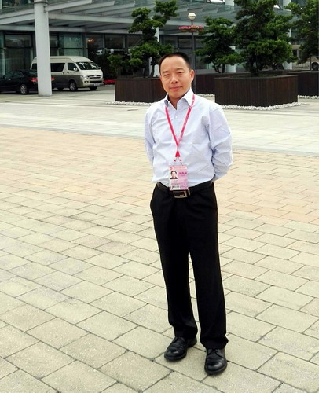
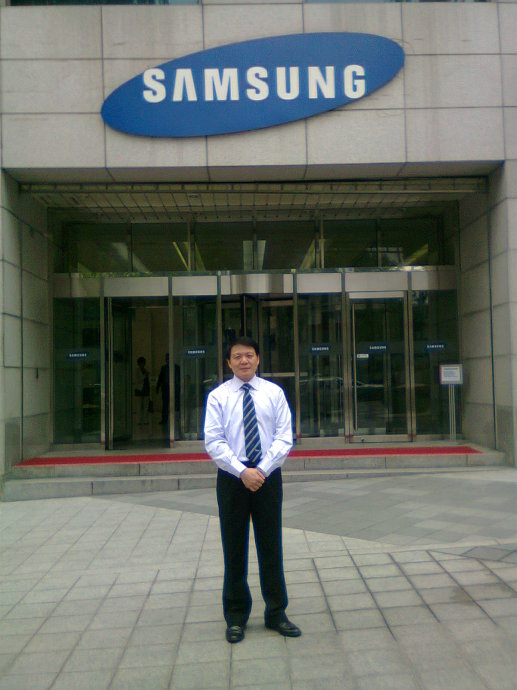
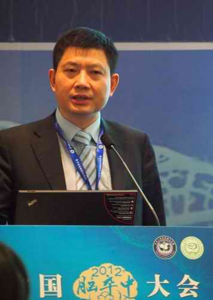
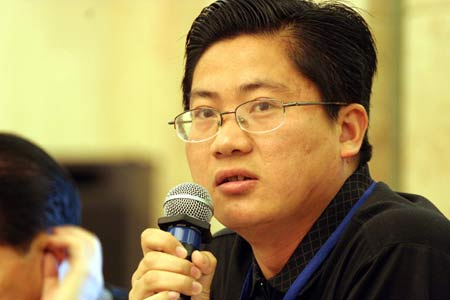
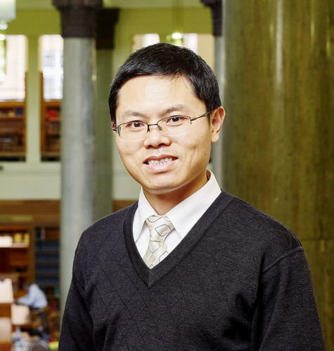
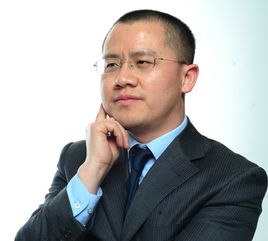
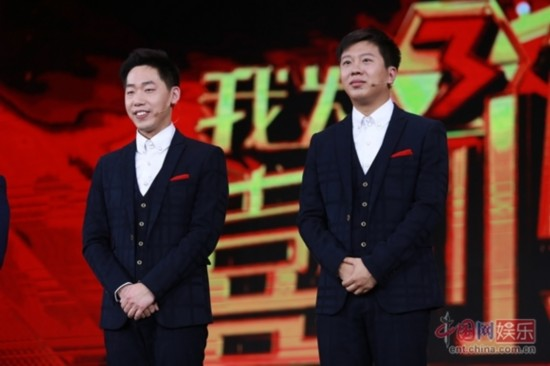
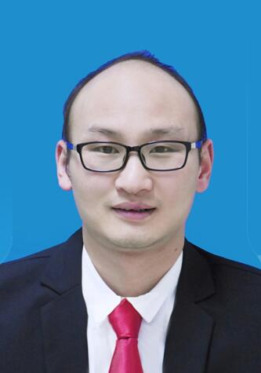

2018-04-17 16:47 大鹏根据网上资料整理 (点击： 733)

1、陈明宇，男，1965年生，江西九江人。1987年毕业于九江学院物理系物理教育专业，江苏省第十三届人民代表大会代表，威尔士大学MBA。现任江苏江海科教开发有限公司董事长、南通理工学院董事长、南通赣邦投资管理有限公司董事长，南通市人大代表，中国民办教育协会高等教育专业委员会副理事长，南通江西商会会长。曾荣获江苏省教育系统优秀共产党员、南通市先进工作者、南通市“五一劳动奖章”、南通市促进教育事业发展先进个人、“感动南通·教育人物”和“中国民办高等教育优秀个人”等荣誉称号。
陈明宇大学毕业后做了七年教师，1994年下海，先后在武汉、无锡两地从事民办学校教育工作；1997年来到江苏南通，自主创业，从南通起步，在上海、珠海等地创办了三所民办中小学，并于1999年筹备创建南通第一所民办高校——紫琅职业技术学院，学院于2000年正式成立，2014年5月经国家教育部批准升格为全日制普通民办本科院校——南通理工学院。
学校升本之后，他提出了“改革创新，跨越发展”的发展战略，并把办成特色鲜明、国内一流的民办大学作为奋斗目标。用真心办教育，以良心育人才，是陈明宇办学的灵魂，更是他和他的团队向社会的庄严承诺，他希望办中国一流的民办大学，他将在民办教育事业发展的道路上不断追求和探索！

2、叶念乔，男，江西九江县人。1981年毕业于九江学院数学系，工商管理硕士，高级讲师，现任广东理工学院董事长。
1981.8—1992.7在江西省九江县二中当教师；1983.9—1986.7，江西师大数学系就读本科；1992.7—1995.7，在广东省高要师范学校当教师；1995.7至今，创办广东理工学院（原肇庆科技职业技术学院）并担任董事长；（其中2005.9—2008.10在中山大学攻读高层管理人员工商管理硕士）。现任肇庆市科培教育投资有限公司董事长，广东理工学院董事长，江西洪州职业学院董事长，广东省政协委员，民盟广东省委常委，民盟肇庆市委主委，肇庆市人大常委，广东省民办教育协会副会长。
叶念乔心系家乡教育事业，多年来一直为母校九江县沙河乡毛桥村毛桥小学提供各方面支持。早在90年代初，他南下创业时，就开始为母校建设出钱出力。2002年，就为学校捐赠了10多台电脑。除此之外，叶念乔先生还一直不断为母校提供各项支持，2013年又捐赠了10万元，为学校新建了一所标准化爱心食堂，极大地改善了师生们的饮食卫生环境。2016年，为学校的师生们送来了36台电脑，并给全校137名学生每人送了4套校服、1个书包和一些精美的文具，还给学校的每位老师赠送了两套工作服。

3、时煌军，男，1973年生，江西彭泽人，1995年毕业于九江学院外国语学院英语教育专业。中共中央党校博士毕业，先后在中组部、中纪委工作。2004年进入商务部，现任商务部直属机关党委副书记（副司级）。

4、汪中求，男，1963年生，江西湖口人，1984年毕业于九江学院中文系，中国精细化管理研究所所长。1984年—1989年，江西云山企业集团子弟中学教师；1990年—1991年，江西云山企业集团总裁秘书；1992年—1994年，香港恒雅（深圳）公司 市场部经理； 1995年—2000年，清华同方股份有限公司商务部副经理、泰豪科技股份有限公司市场总监；2001年至今，中国精细化管理研究所所长；北京汪中求细节管理咨询公司首席咨询师；国资委商务职业资格认证委员会主任委员。2008-2009年，曾任北京大学民营经济研究院精细化管理研究中心主任。讲授课程有《细节决定成败》、《精细化管理》、《浪费的都是利润》、《零缺陷工作》、《执行力的境界》、《改善力》、《读书是一生的工作》等。擅长领域：精细化管理的理论研究及其管理培训与管理咨询。曾授课学校：美国哥伦比亚大学、德国慕尼黑理工大学、新加坡国立大学、韩国汉阳大学、北京大学、清华大学、中央党校、国家行政学院、中国国防大学、南昌陆军学院、浙江大学、武汉大学、浙江工商大学、江西财大等。
著作有：《细节决定成败》，百次加印，总发行量超过500万册；中文繁体字版本外销台湾、香港、新加坡、马来西亚，已翻译到韩国和越南。《细节决定成败Ⅱ》，发行量40万册，翻译出口韩国。《精细化管理》（吴宏彪、刘兴旺合著），发行量20万册，翻译出口韩国。2003年第一本专著《营销人的自我营销》，发行量超过10万册。2008年出版《1750-1950的中国》（与王筱宇合著）。2009年推出《契约精神》、《谁能超越丰田》。2010、2011年的《浪费的都是利润》、《零缺陷工作》（与朱新月合著）均被韩国引进。2012年《中国需要工业精神》，获中国图书协会畅销书奖。2018年《茅台是怎样酿成的》。

5、余波，男，医学博士，留美博士后，复旦大学教授，博士生导师，上海市领军人才，上海市科技启明星，上海市重点专科血管外科学科带头人。1983年毕业于九江学院医疗系，1995年上海医科大学博士毕业，2001年美国旧金山加州大学(UCSF)血管外科博士后出站。现担任复旦大学附属浦东医院院长，复旦大学附属华山医院血管外科主任，卫生部脑卒中筛查与防治工程中青年专家委员会常务委员，中华医学会上海外科专业委员会委员及区县学组组长。所领导的血管外科团队每年完成数百例大中型血管外科手术，是国内最大的以颈动脉外科诊疗为特色的血管外科中心。2005年起连续主办5届上海国际颈动脉外科峰会并担任大会主席。担任卫生部主办的中国脑卒中大会颈动脉论坛秘书长。1996年起先后获得国家自然科学基金、国家教育部基金、上海市科委重点基础项目，上海市浦东新区卫生系统领先人才等项目及基金资助。近年来在欧美及国内重要医学学术刊物上发表文章40余篇，参加《实用外科学》等多部专著的编写工作，是《中华医学杂志》编委。

6、练蒙蒙，男，1971年生，江西武宁人，1992年毕业于九江学院汉语言文学教育专业。1994年初开始在江南都市报当记者，2009年11月被评为高级编辑，中国新闻奖获得者。现任中国江西网（大江网）总编辑、江西日报社高级编辑。曾先后被评为2013年度江西省“文化名家”、2014年度江西省“百千万工程人选”，获得全国及省内各项新闻奖励百余次。

7、王斌华，男，1994年毕业于九江学院外国语学院英语教育专业。博士，英国利兹大学（University of Leeds）语言、文化、社会学院口译及翻译研究讲席教授（Chair/Professor of interpreting and translation studies）、博士生导师、多语种会议口译翻译学硕士专业主任。中国翻译协会专家会员，英国“皇家特许语言学家学会”（Chartered Institute of Linguists）会士（Fellow）。
王斌华教授是中文口译研究界近年在国内和国际重要学术期刊发表论文最多的代表人物之一，他近年发表口译及翻译研究论文50余篇，包括SSCI和A&HCI国际权威译学期刊（Interpreting、Meta、Perspectives、Babel等）及“CSSCI/核心期刊”论文近40篇，John Benjamins、Routledge、Springer 及外研社和外教社等知名出版社论集论文10多篇，其中“人大报刊复印资料《语言文字学》”转载15篇。出版专著、译著、翻译硕士和翻译专业本科教材和词典数部。主持香港特区研究资助局“优配基金（GRF）”项目、“教育部人文社科项目”、“广东省人文社科重点研究基地重大项目”等重大项目。

8、石章强，男，1999年毕业于九江学院旅游学院。连锁与互联网品牌营销专家，上海十大青年高端创意人才，高级经济师，硕士生导师。锦坤文化发展集团创始人，上海市政府品牌专家委员，国务院发展研究中心研究员，上海现代服务业发展研究院副院长，上海现代服务业联合会品牌专委会秘书长。
数十年营销、管理及咨询经历，先后首创“软传播”、“热产品”、“新坐商”、“易模式”、“对标”、“混合”等战略、管理和营销思想与方法，为500多家知名企业、政府和组织提供了品牌和营销相关服务。
著有《软传播》、《热产品》、《新坐商》、《易模式》、《老品牌》、《对标》、《混合理论》、《企业过冬》、《企业下乡》、《企业O2O+》等10余本畅销专著，兼任复旦、交大、华师、新华都等多所商学院MBA、EMBA导师。

左为李丁
9、李丁，青年相声演员，北京大逗相声创始人，师从著名相声表演艺术家李增瑞，2006年毕业于九江学院机材学院机电一体化专业。自幼喜爱相声小品表演以及创作，在大学期间组建戏剧协会，活跃在校园舞台，获得多届校园相声小品大赛冠军。2014年4月至今参加北京大逗相声的演出。2014年7月，在第七届全国电视相声大赛上，李丁与搭档董建春表演的《男朋友女朋友》夺得铜奖。曾获得2014年江西卫视“谁能逗乐喜剧明星”第一季总冠军、2014年“第七届CCTV电视相声大赛”作品三等奖、五佳演员。
代表作有《单车问答》《我知道》《健身一家人》。参加了2016年的央视春晚、2017年的央视元宵晚会和2018年的央视春晚。2016年中央电视台春节联欢晚会和搭档李寅飞表演相声节目《我知道》，2017年中央电视台元宵晚会和搭档董建春表演相声《健身一家人》，2018年中央电视台春节联欢晚会和搭档董建春表演相声《单车问答》。

10、潘波，男， 1983年10月生，安徽霍邱县人，2007年毕业于九江学院法学本科专业。2017年9月，考入江西省委党校在职研究生法学专业学习，现任共青城市茶山街道党工委副书记、组织委员。
2008年9月，通过公开招考，担任永修县柘林镇易家河村党委书记助理一职。2008年12月作为江西省的村官唯一代表，同来自全国的34名代表到北京中南海参加了由时任国家副主席习近平主持召开的全国大学生村官代表座谈会，推为10名典型之一作发言。其先进事迹先后得到《人民日报》、《中国青年报》、《农民日报》、江西电视台、《江西日报》、《当代江西》、九江电视台、《九江日报》等多家媒体的报道。
2010年，获“九江市十大杰出青年”提名奖，2012年6月，被评为“九江市优秀大学生村官”和“江西省十佳大学生村官”。
毕业10年来，潘波一直在基层工作，历经3个县市、5个单位、10个岗位，无论在哪里、哪个岗位，他都兢兢业业、认真负责，廉洁自律，做一个永不松动的“螺丝钉”。


学校地址：江西省九江市前进东路551号 邮政编码：332005 招生电话：0792-8310030 8310031 Email：jjuxb@jju.edu.cn
Copyright 2013 九江学院版权所有 备案序号：赣ICP备10004574号